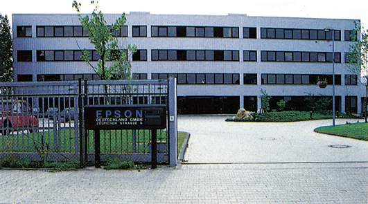
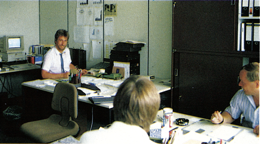
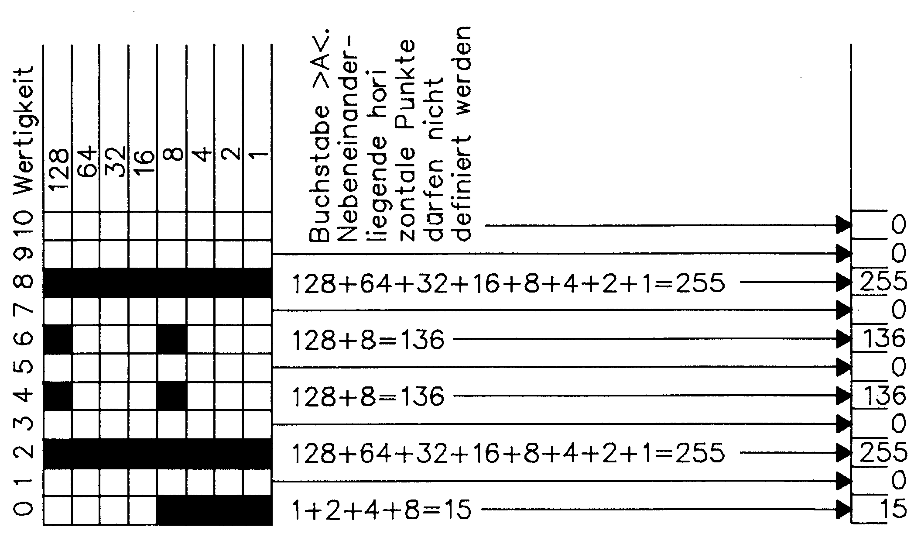

Kennen Sie Ihren Drucker? (Teil 3)
Diesmal dreht sich alles um einen Pionier unter den Druckerherstellern. Wir stellen Ihnen in einem Firmenportrait Epson, seine Produkte und die Epson-Hotline vor. Danach zeigen wir Ihnen, wie Sie einen neuen Zeichensatz für Drucker entwerfen können.
Ohne Epson (Bild 1) wäre die Entwicklung der Druckertechnologie sicherlich in vielen Punkten vollkommen anders verlaufen. Durch ständige Fortentwicklung und neue Ideen hat Epson dazu beigetragen, daß Drucker heute als die wichtigste Ergänzung eines Computersystems angesehen werden. Doch wie kam es zu dieser Entwicklung, was steckt hinter einem Unternehmen, das in der Lage ist, einen Befehls-Standard zu setzen?

Es begann mit den Olympischen Spielen
Epson gehört zu einer Reihe von Unternehmen, die alle aus der 1881 in Japan gegründeten Hattori & Co. Ltd. hervorgegangen sind. Damals beschäftigte man sich ausschließlich mit dem Import und seit 1892, in der neu entstandenen Seikosha Co. Ltd., mit der Produktion von Uhren. Durch mehrere Firmengründungen wurde Seikosha mit dem Markenzeichen Seiko einer der größten Uhrenhersteller der Welt. Mit der Bestimmung von Seiko zum »offiziellen Zeitnehmer der Olympischen Spiele von Tokyo« wurde 1964 die Epson Corp. gegründet. Seiko bekam damals den Auftrag, einen miniaturisierten Matrixdrucker zu bauen, mit dem die im Stadion gemessenen Zeiten festgehalten werden konnten. Die Techniker machten sich an die Arbeit, und es entstand der »Electronic Printer« (abgekürzt EP), der Urvater aller Matrixdrucker. Dieser Drucker konnte nicht nur herkömmliche Buchstaben und Zahlen, sondern auch jedes der 40000 Schriftzeichen der Silbensprache »Kanji« darstellen. Das dabei gewonnene Wissen wollte man natürlich nicht ungenutzt lassen, und so baute man 1968 den EP 101, der hauptsächlich in elektronischen Ladenkassen Verwendung fand und findet, denn er wird, in verbesserter Form, heute noch gebaut. Er ist auch der Namensgeber der Epson Corp. (»Sohn des EP« = EPson). Dies war ein Vorteil, der sich mit dem Aufstieg der Heim- und Personal Computer in den 80er Jahren bezahlt machte. Epson war in der Lage, sofort auf die plötzlich entstandene Nachfrage nach Matrixdruckern zu reagieren und große Mengen von Computerdruckern zu konkurrenzlosen Preisen auf den Markt zu bringen. So kam es denn auch, daß sogar der Computergigant IBM nicht auf Epson-Drucker verzichten wollte oder konnte. Jahrelang kaufte IBM seine PC-Drucker bei Epson ein. Damals wurde der wohl kaum noch umzuwerfende Ruf Epsons begründet, und auch heute noch gilt in vielen Bereichen der Satz, daß Epson und Drucker zwei Worte für dieselbe Sache sind.
Der erste Matrixdrucker für den Einsatz an einem Terminal oder einem Personal Computer, war der TX-80, der 1980 auf den Markt kam. Dieser Drucker hatte einen, an heutigen Maßstäben gemessen, relativ bescheidenen Vorrat an Steuerbefehlen.
Standards setzen
Das Folgemodell brachte Epson im Jahre 1981 auf den Markt. Mit dem wohl als legendär zu bezeichnenden MX-80 und der daraus entstanden MX-Serie gelang Epson der Vorstoß in die Gruppe der weltgrößten Druckerhersteller. Die folgenden Modelle der RX-Serie und schließlich die FX-Serie gaben dieser Entwicklung weiteren Vorschub und festigten die Stellung Epsons maßgeblich. Das Erfolgsgeheimnis all dieser Modelle ist letztlich auf die von Anfang an bestehende Kontinuität bei der Auswahl der Steuerbefehle zurückzuführen. »Aufwärtskompatibilität« heißt das Zauberwort, das dafür sorgte, daß neue Modelle immer auch den Befehlssatz des Vorgängermodells besaßen und besitzen. Programme mußten also, sollten sie von den zusätzlichen Möglichkeiten der neuen Druckergeneration keinen Gebrauch machen, nicht umprogrammiert werden. Der damals geborene Gedanke eines einheitlichen Steuercode-Konzepts hat sich im Laufe der Zeit als absolut richtig herausgestellt, da auch immer mehr Software-Häuser diesen Vorteil erkannten und ihre Programme auf diesen bis dato »Quasi-Standard« ausrichteten. So war es eigentlich nur noch eine Formsache, einen Standard für Matrixdrucker zu schaffen und als ESC/P (Epson Standard Codes for Printers) zum Warenzeichen anzumelden. Die Notwendigkeit, die Software immer benutzerfreundlicher und problemoser zu gestalten, unterstützt die in diesem Bereich tatsächlich sinnvolle Standardisierung. Zusammen mit der mittlerweile auch als Standard geltenden Centronics-Schnittstelle, die auch an neueren Heim- und Personal Computern in genormter Form zu finden ist, verliert das bislang riesige Problem der Druckeranpassung an Schrecken. Langfristig gesehen werden es sich wohl nur die wenigsten Druckerhersteller und Software-Häuser leisten können, ihr eigenes »Steuercode-Süppchen« zu kochen. Am Ende dieser Entwicklung werden Programme stehen, die sofort und ohne zeitraubende Einstellprozeduren, ihre gesamte Leistungsfähigkeit auch auf dem Drucker reproduzieren können.
Nicht nur Matrixdrucker
Obwohl Matrixnadeldrucker den Schwerpunkt des Epson-Produktsortiments bilden (LX-80/90, RX-80/100, FX-85/105, 1LQ-800/1000, LQ-1500, JX-80, EX-800), vertraut man nicht nur auf dieses eine Standbein. Im Druckerbereich werden weiterhin die Thermotransferdrucker P-40/80 und im Plotterbereich der HI-80-Plotter angeboten. Ganz besonders stolz ist man darauf, mit dem neuen IX-800 einen Tintenstrahldrucker für den Dauerbetrieb am Computer anbieten zu können. Daneben baut Epson aber auch seit mehreren Jahren Personal Computer (QX-10, QX-16), wobei der Epson PC+ den letzten Stand der Entwicklung darstellt. Auch hier ist Epson seiner Linie treu geblieben, denn die PC-Reihe ist zwar vollkommen IBM-kompatibel (MS-DOS-Betriebssystem), zeichnet sich aber durch ein vorbildliches und platzsparendes Design, leichte Geschwindigkeitsvorteile und einigen nützlichen Features, wie vorne angebrachte DIP-Schalter, Resetknopf und Tastaturanschluß, aus. Weitere Produktbereiche sind die Handhelds (HX-20, PX-4, PX-8), Akustikkoppler (CX-21DB), tragbare Terminals (Handy Terminal), sowie Produkte zum Einbau in andere Geräte (Druckmechanismen, LCD-Displays, Floppy-Laufwerke) und vieles mehr.
Drucker kann man auf viele verschiedene Arten verkaufen, Epson hat sich dafür entschieden, den Weg des Services zu wählen. Obwohl Epson-Drucker eine äußerst geringe Ausfallquote haben, lehrt die Erfahrung, daß es rund um das Thema Drucker eine Menge Fragen gibt. Doch fangen wir beim Service an. Epson-Drucker werden über den autorisierten Fachhandel verkauft. Nur dadurch ist sichergestellt, daß der Kunde auch den Rat und Service erhält, den er sich wünscht. Der Fachhändler ist deshalb auch immer der erste Ansprechpartner, wenn es um Fragen der Anpassung oder, falls einmal etwas defekt ist, auch um Fragen der Reparatur geht. Nur wenn der Fachhändler mit seinen Mitteln nicht mehr in der Lage ist, dem Kunden weiterzuhelfen, wendet er sich an den Technischen Service der Deutschen Epson-Zentrale in Düsseldorf. Eine spezielle Kennzeichnung und Behandlung im internen Lagerfluß sorgt dafür, daß die defekten Geräte innerhalb kürzester Zeit, in der Regel binnen Tagesfrist, repariert und an den Fachhändler zurückgeschickt werden.
Doch das ist nicht alles, was man sich zum Thema Kundenservice hat einfallen lassen. Seit Anfang des Jahres gibt es eine exzellent ausgestattete Hotline, die natürlich nicht nur bei Druckerfragen, sondern auch zu anderen Epson-Produkten kompetent Auskunft geben kann. Wir haben die Epson-Hotline für Sie besucht und konnten »live« miterleben, daß man den Begriff Service dort nicht nur kennt, sondern auch sehr ernst nimmt. So werden dort von Herrn Philipp (Software), Herrn Moewes (Hardware) und Herrn Hane (Hardware) Fragen aus den unterschiedlichsten Bereichen, hauptsächlich aber zu Druckern, schriftlich und telefonisch beantwortet (Bild 2). Dabei haben die drei von der Hotline einen regelrechten »Fehlersuchalgorithmus« entwickelt, mit dem sie innerhalb kürzester Zeit zum Kern des Problems vordringen. Danach ist es oft gar nicht so schwer, mit den zur Verfügung stehenden Computern, Druckern und Programmen eine umfassende Problemlösung zu finden. Was nicht sofort geklärt werden kann, landet dabei nicht etwa im Papierkorb, sondern wird immer dann bearbeitet, wenn keine Kunden am Telefon sind. Außerdem geben Sie Auskunft über Weiterentwicklungen und neue Betriebssystem-Varianten für Epson-Drucker. Die Besitzer eines LX-90-Matrixdruckers können bei der Hotline sogar Informationen über etwas ganz Besonderes erhalten — das VC 64 PIC. Dabei handelt es sich um eine Erweiterung des JX-90-Betriebssystems im Interface-Modul. VC 64 PIC ermöglicht es, deutsche Umlaute, verschiedene Schriftarten, Unterstreichen und sogar die Definition eigener Zeichen auf dem LX-90 einzustellen. Auch für den FX-85 kann man dort Informationen über eine Betriebssystemerweiterung erhalten, die diesen Drucker mit dem vollständigen Befehlssatz des erweiterten ESC/P-Standards ausstattet. Nach unserem Besuch konnten wir der Epson-Hotline nur beste Noten geben. Für die Freude und Hilfsbereitschaft, die wir dort gesehen haben, gibt es eigentlich nur ein Wort — vorbildlich. Eine Bitte hat man uns allerdings noch mit auf den Weg gegeben: Viele Fragen lassen sich durch das Studium des Handbuches lösen. Zugegeben, so ein Handbuch ist ein Wälzer, doch würde man es kleiner machen, ginge Information verloren. Deshalb die Bitte, erst wenn das Handbuch oder der Fachhändler nicht mehr weiterhelfen können, bei der Hotline anzurufen. Dadurch wird sichergestellt, daß man dort auch in Zukunft noch die Zeit hat, sich um jeden Kunden individuell zu kümmern.

Was ist ein Steuerbefehl?
Wie wir oben gesehen haben, stellt der ESC/P-Befehlsstandard ein wesentliches Hilfsmittel bei der Ansteuerung eines Druckers dar. Doch was steckt eigentlich dahinter? Was ist ein Steuerbefehl? Betrachten wir dazu die Möglichkeiten, die überhaupt bestehen, einem Drucker einen Befehl zu geben. Prinzipiell gibt es dafür (solange die meisten Computer mit acht Bit arbeiten, beziehungsweise die Peripheriegeräte ansprechen) nur 256 genau definierte Variationen ein Zeichen zu codieren. Dabei reichen die Möglichkeiten von binär »00000000« = dezimal »0« bis binär »11111111« = dezimal »255« (wobei jede Binärziffer ein Bit eines Bytes darstellt). Nun reichen 256 Zeichen (0 bis 255) natürlich aus, um alle Buchstaben, Zahlen und Sonderzeichen darzustellen. Will man aber die heute möglichen Funktionen eines Druckers voll ausnutzen, so sind 256 Variationen einfach zu wenig. Das hat man nicht sofort gemerkt, denn immer noch gehören zum ESC/P-Standard einige Ein-Byte- Befehle (BEL,BSCAN,HT,LFVT,FFCR, SO,SI) — ein Fragment aus der Zeit, als man noch glaubte, mit 256 Zeichen auszukommen. Doch hier hat die technische Entwicklung eine Änderung erzwungen: Steuersequenzen würden notwendig. Diese Sequenzen werden durch einen bestimmten Wert, dem ESC-Code (dezimal 27, hexadezimal $1B oder binär %00011011) eingeleitet und bestehen aus mehreren aneinandergereihten Bytes. Der Name »ESC« kommt von dem englischen Wort »escape« und könnte die Flucht aus der Enge der ASCII-Tabelle (Standard-Zeichentabelle) umschreiben. Um beispielsweise kursive Zeichen zu drucken, muß dem Drucker folgende Wertfolge übermittelt werden:
27 52
In den Handbüchern ist derselbe Befehl wie folgt zu finden:
ESC 4 oder
LPRINT CHR$(27);"4"
Ganz gleich welche Schreibweise verwendet wird, die Wirkung auf den Drucker ist dieselbe. Nun darf man allerdings nicht davon ausgehen, daß man alle Schreibweisen gleichermaßen verwenden kann, den der C 64 hat nun mal sein eigenes Basic. Obiger Befehl würde im Commodore-Basic wie folgt aussehen:
10 OPEN 1,4 :REM KANAL
ZUM DRUCKER OEFFNEN
20 PRINT#1,CHR$(27);
CHR$(52):REM KURSIV
30 CLOSE 1:REM KANAL
SCHLIESSEN
Beim Commodore ist es also notwendig, immer erst einen Kanal zum Drucker zu öffnen (Zeile 10) und auch wieder zu schließen. Der eigentliche Steuerbefehl steht in Zeile 20, denn dort werden nacheinander der ESC-Befehl und dann der Wert 52 zum Einschalten der Kursivschrift gesendet. Das kann man auch überprüfen, indem man den Drucker in den sogenannten HEX-Modus schaltet (durch Drücken der LF- und FF-Taste beim Einschalten des Druckers). In diesem Modus werden alle ankommenden Zeichen nicht als Zeichen, sondern als Zahlenwert ausgedruckt. Aber wie der Name des Modus schon sagt, werden keine dezimalen, sondern hexadezimale Zahlen ausgedruckt.
In unserem Beispiel finden Sie deshalb die Zahlenkombination: 1B 34
Das ist nichts anderes als dezimal 2752. Aus dem HEX-Modus kommen Sie übrigens nur durch Abschalten des Druckers wieder heraus.
So wie dieses Beispiel sind alle weiteren Steuerbefehle eines Druckers aufgebaut. Der Bedarf an Steuerbefehlen ist bei modernen Druckern wie dem Epson EX-800 mittlerweile riesig. So kommt es, daß mittlerweile sogar schon Kleinbuchstaben und Sonderzeichen mit Steuerbefehlen belegt sind. Ein Steuerbefehl ist also nichts anderes als ein Befehl, der im simpelsten Fall aus einem einzelnen Byte, zum Beispiel CHR$(4) (SO= Breitschrift für eine Zeile ein), besteht. In diesem Fall weiß der Drucker aufgrund seiner im Betriebssystem festgelegten Tabelle, daß dieses Zeichen nicht direkt druckbar (wie zum Beispiel ein »A« ist, sondern eine gewisse Funktion, in diesem Fall die Breitschrift, einschaltet. Bei den ESC-Steuerbefehlen erkennt der Drucker zunächst das ESC-Zeichen (CHR$(27)) und weiß dann, daß die nachfolgenden Zeichen nicht gedruckt werden sollten, sondern ebenfalls Steuerbefehle darstellen. So gibt es beispielsweise den Befehl ESC SO (CHR$(27) CHR$ (14)), der ebenfalls die Breitschrift einschaltet, dann allerdings nicht nur für eine Zeile. Was man zum Beispiel mit den Steuerbefehlen machen kann, wollen wir nun mit einem kleinen Programm zeigen, das den Epson FX- 80/85 mit einem neuen Zeichensatz versorgt.
Die Sache mit dem Zeichensatz
Manche Drucker, wie zum Beispiel der Epson FX-80 oder der FX-85, verfügen über die Möglichkeit, nicht nur den fest vorprogrammierten ROM-Zeichensatz zu drucken, sondern akzeptieren sogar ganze selbstdefinierte Zeichensätze. Das hier abgedruckte Programm (Listing) macht nichts anderes als die Großbuchstaben und die Zahlen durch selbstdefinierte, etwas technisch aussehende Zeichen zu ersetzen. Dazu einige Erklärungen: Zunächst wird in der Zeile 70 ein Kanal zum Drucker geöffnet. Auf eine Sekundäradresse wurde dabei bewußt verzichtet, denn es ist notwendig, daß die Daten ohne Umwandlung an den Drucker übermittelt werden. Wenn Sie Besitzer eines Wiesemann- oder Data-Becker-Interfaces sind, so lautet die Zeile:
70 OPEN 1,4,1
Wenn Sie ein Görlitz-Interface besitzen, tragen Sie bitte folgendes ein:
70 OPEN 1,4,4
Bei allen anderen Interfaces suchen Sie bitte die Sekundäradresse für den Linear- oder Transparentkanal. Alle anderen Zeilen des Listings können unverändert übernommen werden. In Zeile 80 wird dann zunächst der Zeichensatz des ROMs in das druckereigene RAM kopiert, damit nicht definierte Zeichen wenigstens als Originalzeichen gedruckt werden. Dazu muß der DIL-Schalter 1-4 (das ist die größere der beiden DIL-Schalterreihen) auf »ON«, also nach links gerichtet stehen. Der Befehl steht fest und bedarf keiner weiteren Erklärungen. In Zeile 100 werden dann die selbstdefinierten Zeichen, das heißt der RAM-Zeichensatz, den wir gerade kopiert haben, aktiviert. Da wir etwas verändern wollen, brauchen wir jetzt nur noch befehlen, welche Zeichen verändert werden (Zeile 120) und welches Aussehen sie haben sollen (Zeile 200 bis 450). In Zeile 120 ist festgelegt, daß die Zeichen A bis Z neu definiert werden sollen (letztes Attribut), der Rest des Befehls ist vorgeschrieben und wird nicht verändert. Wenn Sie also nur die Zeichen A bis C verändern wollen, lautet das letzte Attribut »AC«. Zeile 140 bis 190 sind nun zwei Schleifen, die zum einen 25mal den Wert 139 und anschließend die Zeichendefinition einliest und dann zum Drucker sendet. Was hat es nun mit dem Wert 139 auf sich? Er ist notwendig, um dem Drucker Informationen über Unterlängen und die Zeichengröße für Proportionalschrift zu geben. Wir haben uns für Unterlängen und Proportionalschrift entschieden und den Wert 139 erhalten. Aber wie? Nun, die Zahl 139 läßt sich mit einem Byte darstellen. Dieses Byte errechnet sich wie folgt: Das höchstwertige Bit (128) gibt an, ob die neunte Nadel verwendet wird oder nicht. Die nächsten drei Bits (Wert 64,32,16) geben die Startposition der Zeichendefinition an. Soll dies die nullte Spalte sein (es wird mit Null angefangen zu zählen), so ist keines dieser Bits gesetzt (dezimal »0« = binär »000«. Soll die Zeichendefinition in der zweiten Spalte beginnen, so wäre dies dezimal »2« = binär »01l0« in der dritten Spalte, erhält man demnach dezimal »3« = binär »011«. Die letzte Spalte eines Zeichens ist die Spalte »11« = binär »1011«.
Beliebige Zeichen im Drucker
Zusammen erhält man für das Attribut demnach folgenden Wert: Binär 10001011 = dezimal 139. Wem das jetzt zu schwierig war, der kann auch einfach immer den Wert 139 vor einer Zeichendefinition senden, er muß dann nur darauf achten, daß die Definition in der »nullten« Spalte beginnt und in der elften Spalte aufhört. Der Rest ist dafür relativ' einfach, denn Sie brauchen nur noch, wie in Bild 3 gezeigt, den Wert für Ihre Zeichendefinition zu errechnen und so wie wir es in den DATA-Zeilen gemacht haben, eintragen. Ab der Zeile 470 wiederholt sich das Programm übrigens im gewissen Rahmen, denn ab da werden analog zu den Buchstaben die Zahlen neu definiert.

Wer jetzt Interesse hat, seine eigenen Zeichensätze zu entwerfen, kann sich gleich an diesem Programm üben und zusätzlich die noch fehlenden Kleinbuchstaben definieren. Wer sogar weitere neue Zeichensätze entworfen hat, sollte Sie an den Verlag schicken, damit sie auch anderen Lesern zugute kommen können.
(aw)Epson Deutschland GmbH, Zülpicher Str. 6, 4000 Düsseldorf 11 Hotline: 0211/5603-130 (Philipp) -133 (Hane) -173 (Moewes)